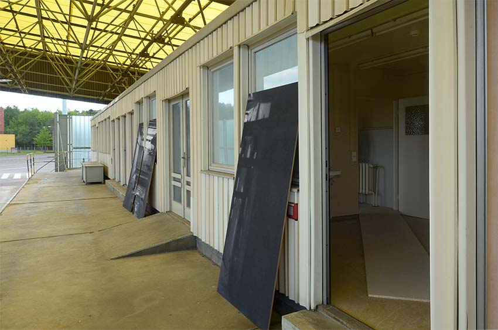

Jessica Arseneau





Installation views in group exhibition Operation Grenze, at Memorial of the german division in Marienborn, Germany
Scenery for a Palimpsest
2017
Site specific installation, photographies, wood, water, pigment, digital video on television screen
While working on the former inner border of Germany in the piece Scenery for a Palimpsest, I tried to reveal the ambivalence of the nostalgic atmosphere of the East perceived since 1989. I researched the tunnel system under the site of the memorial but inaccessible to the public to questions the dominant historical discourse within various versions that I’ve been told. Scenery for a Palimpsest consists of photographic work, video installation and spatial intervention in the former veterinary station of the border facility. The parts mix reality and fiction by showing a real tunnel as a research object, as well as a metaphor for a possible parallel world. This mystifying approach to the tunnel collides with the neither secret nor fabled subterranean supply routes. This contradiction is visible in the video work within the spatial intervention. In the video, the tendency in my work to performatively deal with the representation of history and utopia becomes clear.
THANK YOU
Susan Baumgartl
Fabian Bechtle
Shira Bitan
Joachim Blank
Kay Brudy
Christian Ganzer
Matthias Garff
Mandy Gehrt
Anne Georgious
Zaida Guerrero Casado
Marie-Eve Levasseur
Slavica Radic
Ingo Riecke
Cartsten Saeger